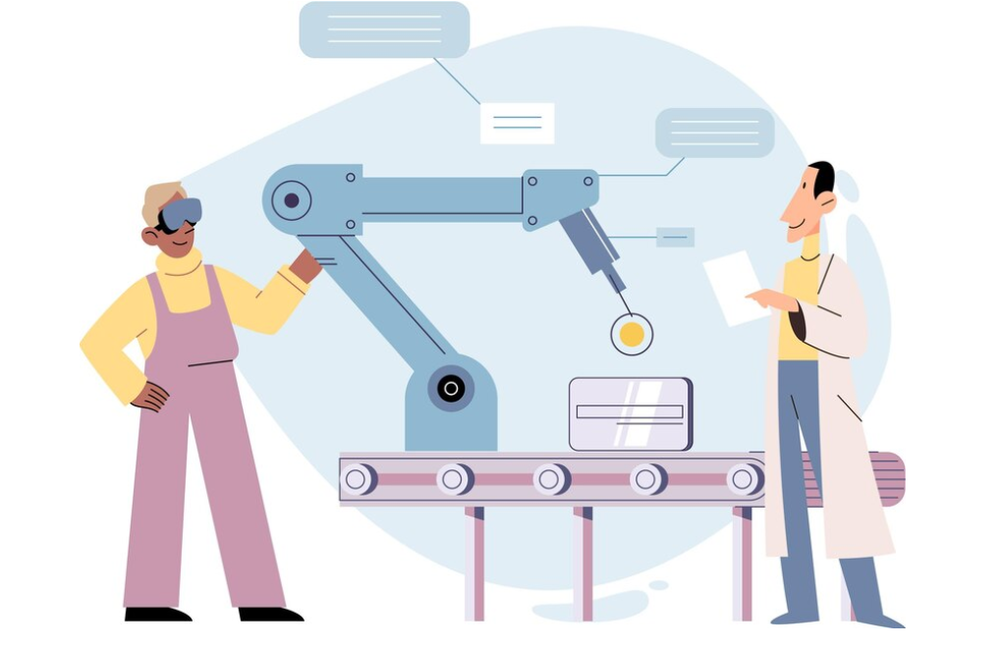

Digital Factory
Hemos desarrollado un modelo tridimensional detallado de nuestra planta cerámica, integrando la disposición de nuevas máquinas y equipos para avanzar en el proceso de automatización. Este modelo 3D es crucial para mejorar y optimizar los flujos de producción, aumentando así la eficiencia operativa. Utilizando Siemens NX, se configuraron los parámetros físicos del modelo, incluyendo propiedades de los objetos, uniones, restricciones cinemáticas, y la asignación de sensores y actuadores. Esta configuración simula el funcionamiento real de la planta y facilita la programación inicial de las secuencias operativas en el editor de Siemens NX. Posteriormente, estas secuencias se traducen al código para el controlador lógico programable (PLC), que se valida y ajusta a través de una conexión simulada con TIA Portal. La fase final implica la programación y simulación en el software Studio 5000 de Rockwell Automation, preparando la planta para una implementación eficiente y verificada de sus operaciones automatizadas.

Hemos desarrollado un modelo tridimensional de las instalaciones de la planta de cerámica. En este modelo se muestra la distribución propuesta de las nuevas máquinas y equipos que formarán parte del proceso de automatización. Esta nueva disposición tiene como objetivo principal mejorar y optimizar los flujos de producción actuales, incrementando la eficiencia operativa de toda la planta. El modelo 3D permitirá visualizar de manera precisa la ubicación y el funcionamiento integrado de cada una de las máquinas automatizadas planificadas para su posterior instalación en las distintas áreas de la fábrica.

Posteriormente, se importó el modelo 3D a Siemens NX, en este entorno, se configuraron los parámetros físicos del modelo, incluyendo las propiedades de los objetos, las uniones y restricciones cinemáticas, así como la definición de sensores y actuadores que emularán el funcionamiento real de la planta.
Como parte inicial de la programación del sistema de control, se implementó una rutina de operación en el editor de secuencias de Siemens NX. Esta rutina representa el flujo de procesos que se llevará a cabo en la planta automatizada. En el video adjunto, se puede observar la simulación de dichas rutinas previamente definidas.
El siguiente paso será traducir estas secuencias de operación modeladas en NX al código de programación del controlador lógico programable (PLC) que gobernará el sistema de automatización real. La simulación previa en el entorno virtual facilita esta tarea de implementación, al brindar una representación dinámica y funcional que permite validar y ajustar la programación antes de su puesta en marcha definitiva.
Posteriormente, se estableció una conexión entre el software TIA Portal de Siemens y el entorno de simulación Siemens NX. Esto permitió comprobar el funcionamiento del controlador lógico programable (PLC) de manera virtual, previo a su implementación física real.
La conexión se realizó de forma exitosa, logrando vincular el PLC virtual con el modelo 3D de la planta. Como prueba inicial, se programó y simuló la operación de la banda transportadora que conecta el silo de almacenamiento con la prensa de producción.
Si bien la intención original era implementar la rutina completa de toda la planta automatizada durante esta fase, debido a limitaciones de tiempo, se propone continuar esta tarea utilizando el software Studio 5000 de Rockwell Automation. En este entorno ya se desarrolló un programa de control general, siguiendo la lógica y secuencia de operaciones planteada inicialmente en Siemens NX. Ver en el siguiente video: